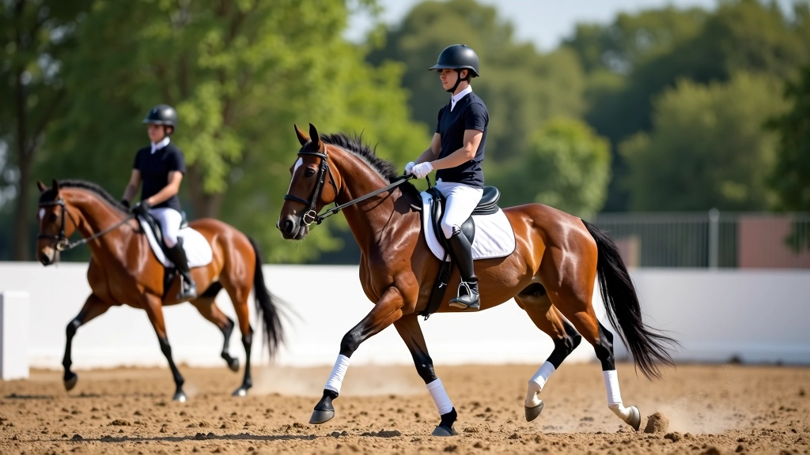

كيف بدأنا ولماذا نحن هنا
لاحظنا أن الفرسان يبحثون عن موارد موثوقة وشاملة عن تمارين العمل المسطح. فروسية الحلبة ليست مجرد رياضة، بل فن يتطلب فهماً عميقاً للحركات والتقنيات. قررنا نحن فرسان الحلبة للفروسية أن نوفر محتوى تعليمي متخصص يجمع بين المعرفة العملية والإرشادات المفصلة.
التخصص والتركيز
نركز على تمارين العمل المسطح في حلبة الفروسية. محتوانا يغطي كل شيء من أساسيات الجلسة الصحيحة إلى الحركات المتقدمة. كل مقال يُكتب بعناية ويُراجع بدقة لضمان جودة المعلومات وسهولة الفهم.
نهج عملي وواقعي
لا نقدم نظريات فقط. نحن نركز على التطبيق العملي والخطوات التي يمكن تنفيذها فوراً. سواء كنت مبتدئاً أو فارساً متقدماً، ستجد في محتوانا ما يفيدك ويحسن من مستواك.
التطور المستمر
منذ تأسيس فرسان الحلبة للفروسية Ltd عام 2020، نستمر في تطوير محتوانا وإضافة مواضيع جديدة. نستمع إلى تعليقاتكم واقتراحاتكم لنقدم محتوى أفضل وأكثر تناسباً مع احتياجاتكم.
